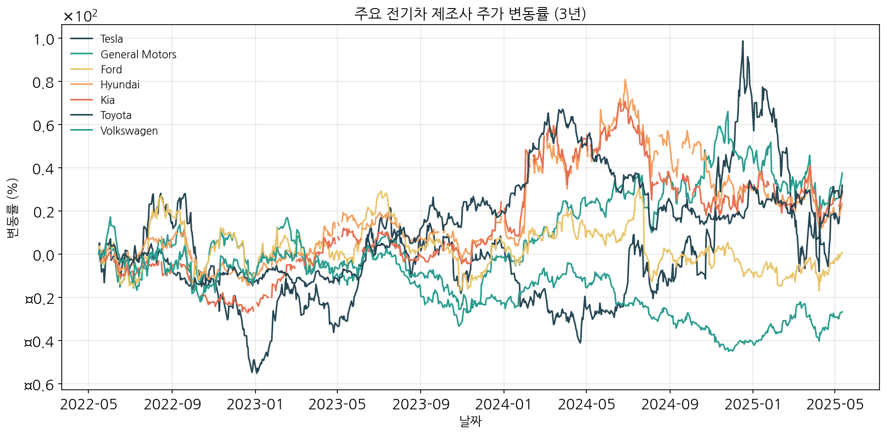
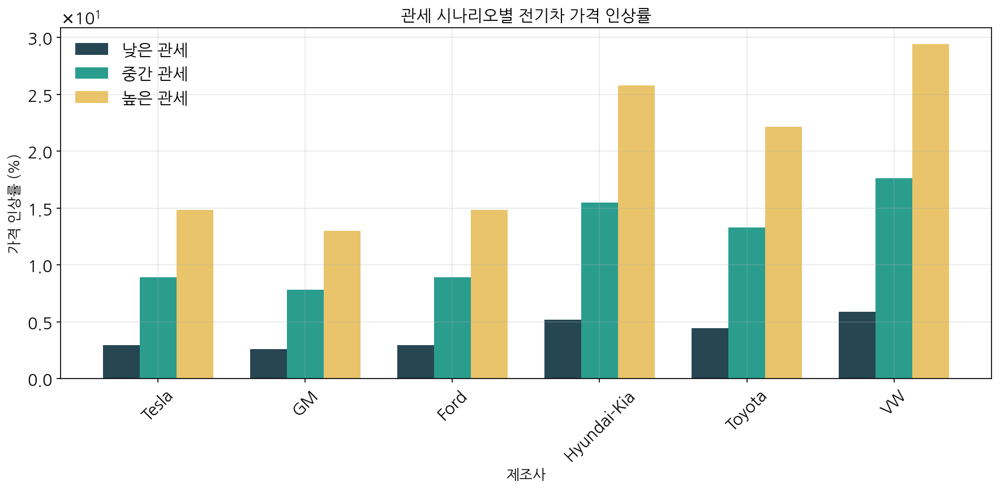
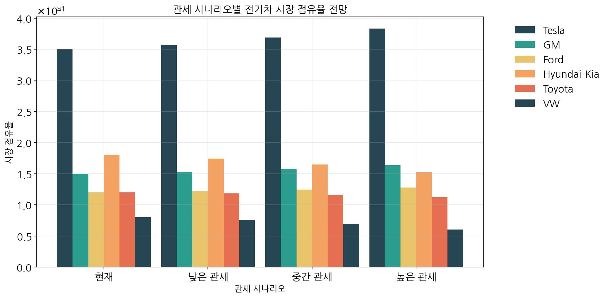

본 보고서는 잠재적인 트럼프 2기 행정부의 관세정책이 북미 전기차 시장에 미칠 영향을 다양한 측면에서 분석하였습니다. 미국, 한국, 중국, 유럽 등 주요 제조업체별로 차별화된 영향과 시장 재편 가능성, 그리고 대응 전략을 제시합니다.
주요 전기차 제조사들의 3년간 주가 데이터를 분석한 결과, 테슬라, GM, 현대차, 기아차가 양호한 수익률을 보인 반면, 폭스바겐은 부진한 성과를 기록했습니다.

| 제조사 | 3년 수익률 | 변동성 | 특징 |
|---|---|---|---|
| 테슬라 | 31.86% | 높음 | 미국 내 생산 기반, 시장 지배적 위치 |
| GM | 37.52% | 중간 | 안정적인 주가 흐름, 현지 생산 강점 |
| 포드 | 0.73% | 낮음 | 전기차 전환 과정에서 투자자 신뢰도 제한적 |
| 현대 | 23.92% | 중간 | 전기차 시장에서 양호한 성과 |
| 기아 | 29.66% | 중간 | 전기차 라인업 확대로 성장세 |
| 토요타 | 29.26% | 중간 | 안정적 성과, 하이브리드 강점 |
| 폭스바겐 | -26.82% | 낮음 | 전기차 전환 과정에서 부진한 성과 |
기업들의 주가 상관관계 분석 결과, 동일 국가 제조사들 간의 상관관계가 높게 나타났으며, 특히 현대와 기아는 0.96의 매우 높은 상관관계를 보였습니다. 또한 미국 제조사와 아시아 제조사 간에는 중간 수준의 양의 상관관계가 존재했습니다.
트럼프 2기 행정부가 실행할 수 있는 다양한 관세 시나리오가 전기차 가격에 미치는 영향을 분석했습니다. 관세 수준에 따라 제조사별로 차별화된 가격 인상이 예상됩니다.

| 관세 시나리오 | 미국 제조사 | 한국 제조사 | 유럽 제조사 | 일본 제조사 |
|---|---|---|---|---|
| 낮은 관세 (10%) | 2.6~4.0% | 4.2~5.1% | 5.0~6.0% | 3.5~4.8% |
| 중간 관세 (25%) | 6.5~10.0% | 10.5~12.8% | 12.5~15.0% | 8.8~12.0% |
| 높은 관세 (40%) | 10.4~16.0% | 16.8~20.4% | 20.0~24.0% | 14.0~19.2% |
관세 시나리오별로 북미 전기차 시장의 점유율 변화를 예측한 결과, 미국 제조사들은 점유율이 상승하고 해외 제조사들은 점유율이 하락할 것으로 전망됩니다.

| 제조사 | 현재 점유율(%) | 낮은 관세 시 | 중간 관세 시 | 높은 관세 시 |
|---|---|---|---|---|
| 테슬라 | 35.0 | 35.7 (+0.7) | 36.9 (+1.9) | 38.3 (+3.3) |
| GM | 15.0 | 15.3 (+0.3) | 15.8 (+0.8) | 16.4 (+1.4) |
| 포드 | 12.0 | 12.2 (+0.2) | 12.4 (+0.4) | 12.8 (+0.8) |
| 현대-기아 | 18.0 | 17.4 (-0.6) | 16.5 (-1.5) | 15.3 (-2.7) |
| 토요타 | 12.0 | 11.8 (-0.2) | 11.5 (-0.5) | 11.2 (-0.8) |
| 폭스바겐 | 8.0 | 7.6 (-0.4) | 6.9 (-1.1) | 6.1 (-1.9) |
트럼프 2기 행정부의 강화된 관세정책은 북미 전기차 시장의 경쟁 구도를 미국 제조사들에게 유리한 방향으로 재편할 가능성이 높습니다. 이는 전기차 시장에서 현재 진행 중인 글로벌 경쟁 구도에 상당한 변화를 가져올 것으로 예상됩니다.
특히 현대-기아차와 같은 한국 제조사들의 경우, 관세 시나리오에 따라 시장 점유율이 최대 2.7%p까지 하락할 수 있어, 미국 내 생산 확대와 공급망 현지화 전략이 더욱 중요해질 것입니다. 또한 글로벌 자동차 산업은 관세 장벽에 대응하기 위한 지역별 생산 전략과 제품 포지셔닝의 재정립이 필요한 시기를 맞이하게 될 것입니다.
결론적으로, 글로벌 전기차 제조사들은 미국 시장에서의 경쟁력을 유지하기 위해 현지 생산 강화, 제품 차별화, 그리고 정부와의 협력 관계 구축 등 다양한 전략적 접근이 요구됩니다.